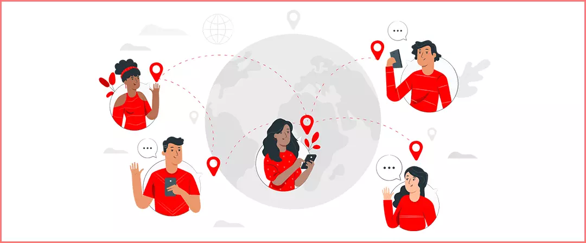
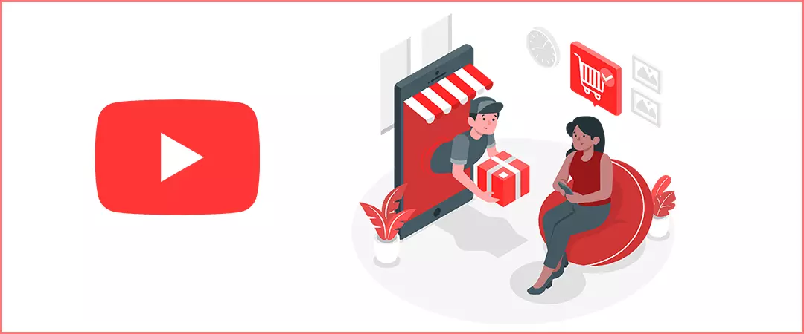
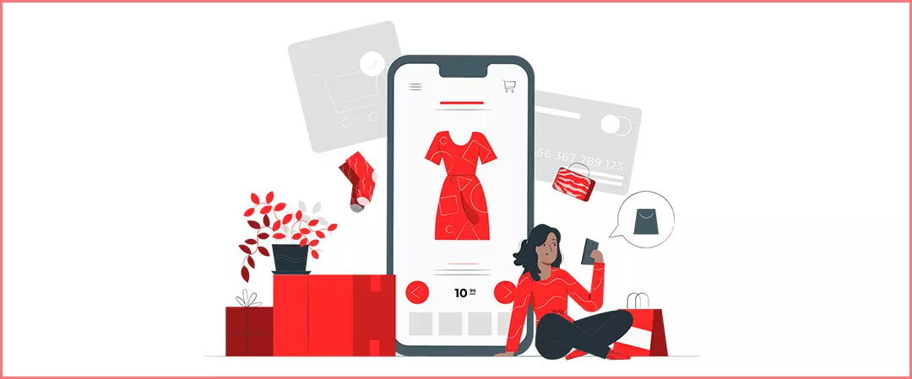
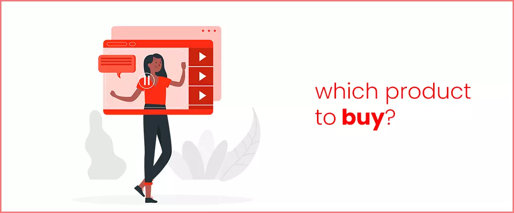
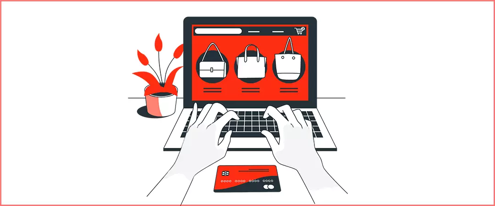
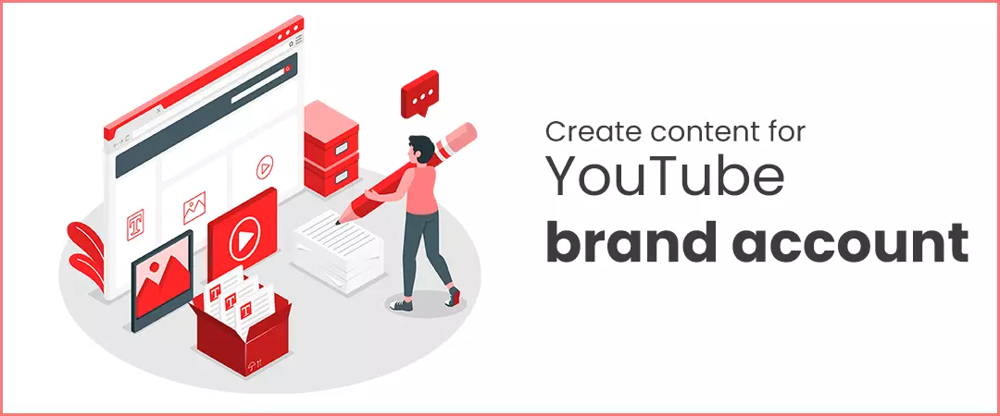
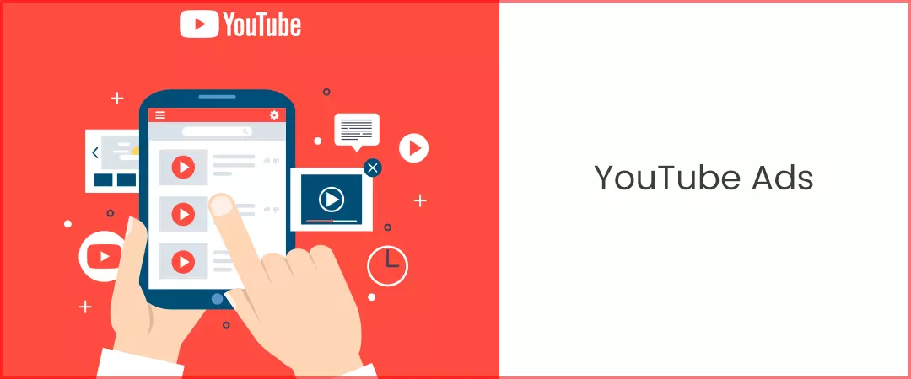

YouTube began as a place for quick entertainment for folks looking for stress- relief by watching cat videos. However, it was not too late before marketers realized its potential as a marketing platform, which can be leveraged for business. This is what we will discuss in today’s blog – YouTube Marketing. In this simplified guide to YouTube Marketing, you will find all that you need to know to create, launch and run a successful YouTube business channel.
Many brands love to buy YouTube subscribers that are real people and genuine YouTube users, in order to appear popular to their target audience. Before we dive into the basics, let’s understand why brands should choose YouTube for marketing?
Contents
- 1. YouTube has 2 billion logged-in monthly users
- 2. Every 7 in 10 brought a product from a brand, after seeing it on YouTube
- 3. The number of advertisers using YouTube’s TrueView for Action increased by a whopping 260% in 2020 itself
- 4. The watch time generated by “which product to buy” videos doubled between 2017 and 2018, and has been escalating ever since
- 5. Nearly 67% shoppers found inspiration to purchase after watching a YouTube video
- 6. Creating a YouTube brand account
- 7. Create content for your brand account as part of YouTube marketing strategy
- 8. Optimizing videos for more views
- 9. Cross Platform Promotion
- 10. Its time to run YouTube Ads
Why choose YouTube Marketing?
We have gathered 5 statistics from reliable sources, that will help you get a clearer perspective on “why your brand should definitely be present on YouTube”.
1. YouTube has 2 billion logged-in monthly users

(Source- Google blog) Thus, YouTube is not something your brand wants to underestimate when it comes to attracting new potential leads and driving more sales.
2. Every 7 in 10 brought a product from a brand, after seeing it on YouTube.

(Source- Google blog) Thus, YouTube has a high conversion rate and can help brands drive high number of sales.
3. The number of advertisers using YouTube’s TrueView for Action increased by a whopping 260% in 2020 itself.

(Source- Google blog) The ads in a TrueView for action campaign use in-stream skippable format. They can contain CTAs, headlines, and end screen in the ad. They yield high results for brand and their products / services.
4. The watch time generated by “which product to buy” videos doubled between 2017 and 2018, and has been escalating ever since.

(Source- Google blog) Thus, YouTube is a great place for brands to educate their target audience about their products / services. Not being present on YouTube in this day and age translates to missing out on potential leads and sales.
5. Nearly 67% shoppers found inspiration to purchase after watching a YouTube video, and out of these, every 9 in 10 say they have discovered new products & services or brands through YouTube.

(Source- Google blog) Meaning, brands can easily find their target audience on YouTube, and inspire them to buy their products & services.
I hope these statistics were able to put it in perspective that YouTube isn’t a platform your brand can afford to ignore. However, I understand that approaching the concept of YouTube Marketing can turn out to be a little intimidating for brands and marketers. Fear no more! Follow this simple 5 step YouTube marketing guide, as I lay out for you the nooks and crannies of how YouTube video marketing works out for brands.
In this blog, I will cover the following:
- How to create a YouTube brand account
- What kind of content to create on brand account
- How to optimize videos for more viewership
- How to get maximum exposure
- How to run ads to target your audience
Let’s dive in!
YouTube Marketing ultimate guide
Step 1: Creating a YouTube brand account
In order to create a brand account on YouTube, follow these steps:
- Make sure you have a Google account, that has been created ‘to manage my business’.
- Now open YouTube and sign in with this Google account and click on ‘My Channel’ in the account module.
- You will find a dialogue asking you to put in your name and create a YouTube channel. However, in order to create a brand account, click on the option of ‘Use a business or other name’, at the bottom of the dialogue box.
- After this you will come across another dialogue box, which allows you to enter ‘Brand Account Name’ and hit the ‘Create’ button to finally create your brand account.
- After creating your brand account, be sure to add a fitting channel icon, channel banner, channel art and channel description.
Step 2: Create content for your brand account as part of YouTube marketing strategy

When it comes to YouTube marketing strategy, brands need to be specific about the type of content they publish on their channel. The following three video types should be definitely up on their channel:
Product Demonstrations
No one likes to read the long instruction manual to understand how to operate a product, however, they will not think twice before watching a video about the same.
Testimonials from Happy Customers
Nothing speaks more about the credibility of a brand and their products & services than happy customers. Thus, it is essential for brands to share reviews from happy customers.
Credible Case Studies
Successful case studies serve like a revisit to a successful campaign. By sharing case studies, brands are able to share their results in a positive light.
Step 3: Optimizing videos for more views
Creating relevant content alone is not nearly enough to grow YouTube channel as part of YouTube marketing strategy, brands should also optimize these videos to increase their discoverability for the target audience.
A Comprehensive Keyword Research
A keyword research allows brands to find keywords relevant to their products & services using tools such as Keyword Planner and Google Trends.
Optimizing title, description and tags
Use these keywords in the video title (preferably the first half), description of the video (use keywords naturally throughout), and video tags (use the main keywords and its variants).
Create custom thumbnail for videos
Creating a custom thumbnail allows brands to create a gripping thumbnail that provokes a user to click. This improves the impression click through rate pf the brand’s channel.
Step 4: Cross Platform Promotion
In this day and age, just creating optimized content is not enough, brands have to go all out to gain exposure for themselves. This is where cross platform promotion becomes a part of their YouTube marketing strategy 101. Thus, promoting your YouTube channel is highly essential for brands.
However, it is important to keep in mind that branding should remain consistent across all platforms, so as to create an identity for brand that allows target audience to recognize easily.
Social Media Platforms-
Share these videos on different platforms such as Facebook, Instagram, LinkedIn or wherever your target audience maybe present.
Blogs
Share videos of relevant products / services in blog posts. This way you give the audience a choice- those who wish to read would go on reading the blog post, on the other hand, those who wish to watch a video on the same, can do so. This also helps to drive traffic on the YouTube channel.
Website
Integrate your customer testimonial videos on the website landing page. These will add immense credibility to your brand. Moreover, it will encourage a visitor to purchase your brand.
Step 5: Its time to run YouTube Ads

Knowing how to run a successful ad campaign on YouTube is crucial for all brands as it helps them reach target audience. However, before learning how to run an ad campaign on the platform of YouTube, it is important to know what kinds of ad does YouTube allows us to run.
These ad formats include
- TrueView in-stream ads (Skippable & Non-skippable)
- Bumper ads
- Video discovery ads
- Masthead ads
- Responsive display ads
Brands use different formats to fulfil different objectives. However, it is time we talk about creating an ad campaign! As part of YouTube marketing video campaigns, Google allows brands to reach their target audience effectively by choosing different goals, campaign subtypes and different formats of ads as well.
To run a video ad campaign on YouTube
- Head to your Google Ads (a crucial YouTube marketing tool) account and click on ‘New Campaign’.
- Now choose the goal for your campaign (hovering over each goal type will show you available ad formats in it).
- After choosing your goal, Google Ads will ask you to choose an ad format.
- You will need to set up parameters such as languages, locations etc., after choosing the ad format and also the tracking measures.
- After setting up the required parameters, enter the URL for which you wish to run ad.
- Select the video format and then hit the ‘Save & Continue’ button and voila! You did it!
Run a successful video ad campaign as part of your YouTube marketing strategy to reach your target audience.
Are you ready to build the most effective YouTube marketing strategy for your brand and attract leads & sales like never before? Come back for more such guides that will help you up your game!